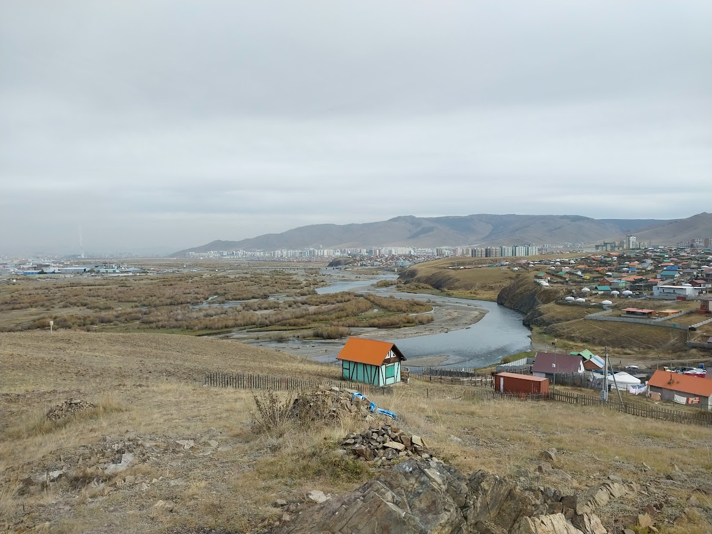
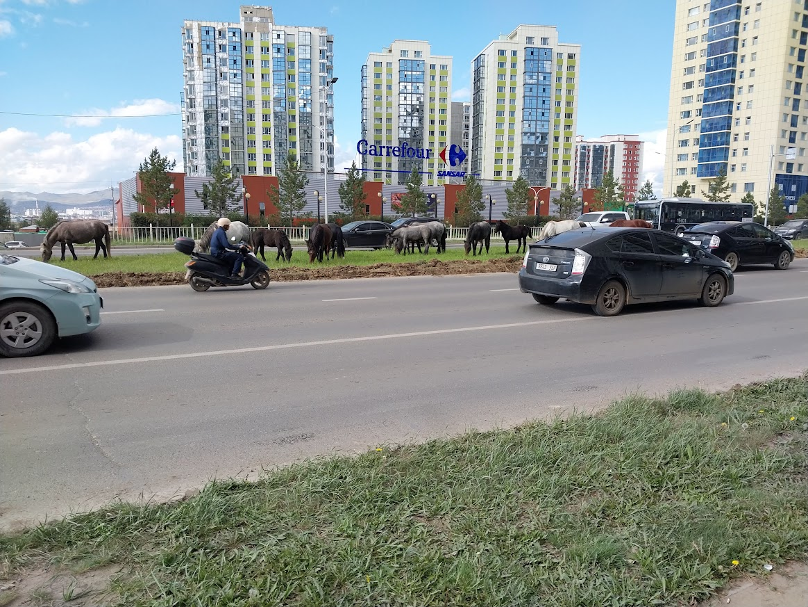

Welcome to the Khaan Uul distring in the capital city of Ulaanbaatar. This district is where the Mongolian Temple will be built. The ward here is one of the biggest in the country despit being far from a church building.

The river that runs through the capital city is called the Tuul river. The suburbs of the city are usually called "ger districts". Gers are traditional homes that some Mongolians still use.
When it comes to grocery shopping, there are only a few supermarkets. One of these is called Carrefour. They are one of the places that you can buy glazed donuts. Other than supermarkets, there are plenty of small markets to buy your food at.

Some people in the suburbs still have animals such as horses wandering around.